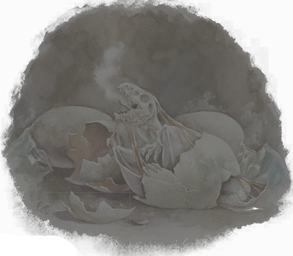

Bruce R. Cordell et al., Draconomicon: Chromatic Dragons (Renton, WA: Wizards of the Coast, 2008).
Dragons lay eggs in small clutches, the exact number varying according to the kind of dragon. Females can lay eggs as often as once per year but rarely do so that frequently. Dragons have a greater degree of influence over their own reproductive systems than humanoids do. Although a female dragon cannot completely control whether or not mating produces fertile eggs, the chance of fertilization falls dramatically if the dragon does not wish to reproduce.
One of the parents—usually the female—typically locates the nest deep in the lair. The nest consists of a mound or pit where the parent gathers the eggs and buries them in sand, dirt, snow, leaves, or whatever medium is best suited to the dragon and to the environment.
The average dragon egg is about the size of a small rain barrel. Eggs normally have the same color as the dragon variety, though somewhat duller in hue. They are roughly ovoid and have a texture somewhere between dragon scale and stone.
When first laid, a dragon egg has resistance to the damage type produced by the parents’ breath weapon (acid for black dragons, fire for red, and so on). (Mixed breed dragon eggs have resistance to one parent’s damage type, and don’t survive if the other parent is incautious with his or her breath.) As the egg nears hatching, the shell grows harder but more brittle, and that resistance diminishes. By the time the wyrmling is ready to hatch, the egg has no resistance at all.
Incubation time varies according to the variety of dragon. In all cases, the eggs are fertilized inside the female and are ready for laying roughly one-quarter of the way through the incubation period.

When a wyrmling is ready to hatch, it begins feeding on the inside of the egg’s shell, absorbing the remaining nutrients. This activity strengthens the young dragon and weakens the shell. The wyrmling then breaks free by clawing at the sides, pressing against and cracking the shell with brute strength, and blasting the shell occasionally with its own already developed breath weapon.
A newly hatched dragon has a full array of abilities. Although inferior to those of a young dragon, these abilities are sufficient for the wyrmling to take care of itself, at least against relatively weak threats and predators. Although an emerging wyrmling is sodden and somewhat awkward, it can run within hours of hatching and can fly within a day or two. A wyrmling’s senses are fully acute, and—due to the interweaving of a dragon’s centers of memory and instinct—it is born with a substantial amount of its parents’ knowledge imprinted in its mind.
Even so, a dragon is not born with the full memories of prior generations. Rather, a wyrmling has a grasp of the generalities of the world and of its own identity. It knows how to move, how to use its innate abilities, who and what its parents are, and—perhaps most important—how to view the world around it. This awareness is one reason that even the youngest dragons are capable of surviving to adulthood. It is also why a sense of superiority and arrogance is ubiquitous among chromatic dragons: They are born already knowing that they’re among the most powerful creatures in the world (or at least will be, after they mature).
Parents might accompany a wyrmling on its earliest hunts, to protect it and to make certain it knows how to hunt efficiently. Wyrmlings left to fend for themselves and wyrmlings that don’t have protective parents still must leave the nest within a few days of hatching to find food. By the third or fourth foray, even solicitous dragon parents let wyrmlings hunt on their own, lest the wyrmlings grow too dependent on parental assistance.
Wyrmlings spend a few years dwelling with one or both of their parents. Some parents welcome this time as an opportunity to teach their offspring lessons beyond its inherited knowledge: the best areas to hunt, what to look for in a lair, how to begin building a hoard, and other knowledge a growing dragon needs to gain. Other parents look on wyrmlings as necessary evils: competitors for resources and for space in the lair that must nevertheless be tolerated for a brief time. Only evil dragons that lack any parenting instinct—in dragonkind, a mild form of insanity—consider forcing a wyrmling to leave the nest early. This condition is most common in black and gray dragons but rare even among them.
A wyrmling whose parents abandoned it before it hatched or could not care for it after it hatched takes longer to hone its abilities. It still has the advantage of its inherited instincts, but the lack of a teacher makes perfecting its abilities an arduous task. Some wyrmlings manage to do so on their own, through trial and error. Others seek out mentors of their own kind. Even an evil dragon might willingly take on a short-term apprentice if the younger dragon shows adequate respect, such as gifts of treasure scavenged or stolen from any source the young dragon can manage. These relationships rarely last more than a few months, because the older dragon inevitably begins to view the younger one as a rival. The younger dragon either departs or ends up on the menu.
Although wyrmlings are small and weak by dragon standards, a wyrmling is roughly the size of a large wolf or a full-grown human. Even at their youngest, dragons have few natural predators. For full statistics on chromatic dragon wyrmlings, see pages 179—186.
White dragons—also called ice dragons or glacial wyrms—have a reputation as dull, stupid creatures. They do not deserve it. Although white dragons are remarkably bestial, they are as intelligent as other chromatic dragons. They care little for intricate schemes or political power, preferring to live their lives as hunters and collectors of treasure. They rely more on instinct than on intellect. Although they still live long and look to the distant future, they do not worry about the future to the extent that their cousins do. They prefer merely to keep themselves comfortably fed and housed.
Like all capable predators, white dragons are masters of their territories. They know the good hiding spots and optimal ambush points. They hunt not only well, but brutally. They kill swiftly and efficiently. They lack the cruelty of black dragons and the ferocity of reds. They also lack those dragons’ inclination to engage with or manipulate intruders or neighbors. Unless potential victims quickly offer solid reasons not to kill them, white dragons likely slay first, eat second, and never consider asking questions. The few offers known to have saved fast-talking travelers included gifts of gems with promises of more gems to come or, even better, gifts and promises of more meat than the travelers themselves would provide if eaten.
Like all chromatic dragons, white dragons look down on other creatures. In the white dragon’s case, this attitude is evidence of its tendency to view all living creatures as potential prey. Prey is, after all, inferior to the hunter strong enough to eat it. Rarely, if ever, can a community negotiate peaceful coexistence with a white dragon whose territory borders it. Members of a community might have a slim chance of convincing a dragon to leave their livestock alone, at least for a while, if they display a significant show of force or give a truly magnificent bribe. Barring these options, however, nothing but the dragon’s death can stop it from hunting the people’s herd animals—and probably the people themselves.
As animalistic hunters, white dragons have little preference among types of prey. They attack and eat the most convenient creatures worth the trouble of killing. Because farmers’ cattle offer a lot more meat, they interest a white dragon more than the farmers themselves—but a dragon does not balk at eating available sentient beings. White dragons prefer frozen foods, burying their prey in snowbanks or walls of ice for days or weeks before consuming it.
White dragons possess a few traits not purely predatory. Like reds and blues, they have especially long memories for grudges and insults. They might seek revenge for slights many years after erring parties have forgotten them.
White dragon eggs incubate for a period of roughly fourteen months, the first three and a half of which they spend within the female’s body. White dragons lay clutches of eight to ten eggs each, but only a quarter to a third of them survive until they hatch. A white dragon’s wyrmling stage lasts for three or four years. The young stage lasts until the age of one hundred. An adult dragon becomes an elder at roughly 750 years, and an elder becomes ancient at about 1,700. White dragons have been known to live as much as 2,100 years.
When a newly hatched dragon emerges from the egg, it is sodden in nutritive fluids and slightly stiff from never before having flexed its muscles. Within the day, though, the awkward wyrmling transforms into a creature already in possession of a full suite of powers and fully conscious of its surroundings. Wyrmlings are sometimes confused with drakes or mundane reptilian creatures, but not for long.
White dragons grow quickly but are more ferocious than cunning; most die before maturing. White wyrmlings are nasty blights of cold and bestial hunger that blow in with cold weather out of the mountains, looking for food and treasure. A white wyrmling’s head crest is less pronounced than an adult’s, and its throat and chin are smoothly scaled, lacking the dewlap and spike of an adult. It has only a hint of horns on the ridges over its eyes and ears. The rest of its body has yet to develop scales and is instead protected by leathery white hide.
A white dragon lays its eggs in a cold, remote location. Although low temperature is not necessary for the eggs to hatch, it does season the wyrmlings to their environment and might be necessary for developing resistance to cold. Ice caves in glaciers are best, but deep crevasses or hollows in frozen tundra can also serve. After a clutch of white wyrmlings hatches, the creatures take a few hours to clean themselves and gather their strength. But within the day, they are out of the hatchery, hunting for their first meals.
White wyrmlings have a chilling breath weapon that slows and weakens foes just like that of mature whites, and they can also lash out with a flurry of claws and fangs. However, they can’t call upon the frigid power of older dragons. Like red wyrmlings, they fight to the bitter end, and sometimes their brutality can help them win out.
Sometimes kobolds attempt to tame a white dragon hatched from a plundered egg. This tactic often ends poorly for the would-be dragontamer, but occasionally it succeeds. Dragonborn sometimes are able to work with white wyrmlings and keep them as pets, although the creatures are too vicious and unpredictable for civilized environments. Occasionally white wyrmlings are encouraged by blandishments of treasure and food to briefly join forces with minor intelligent undead.